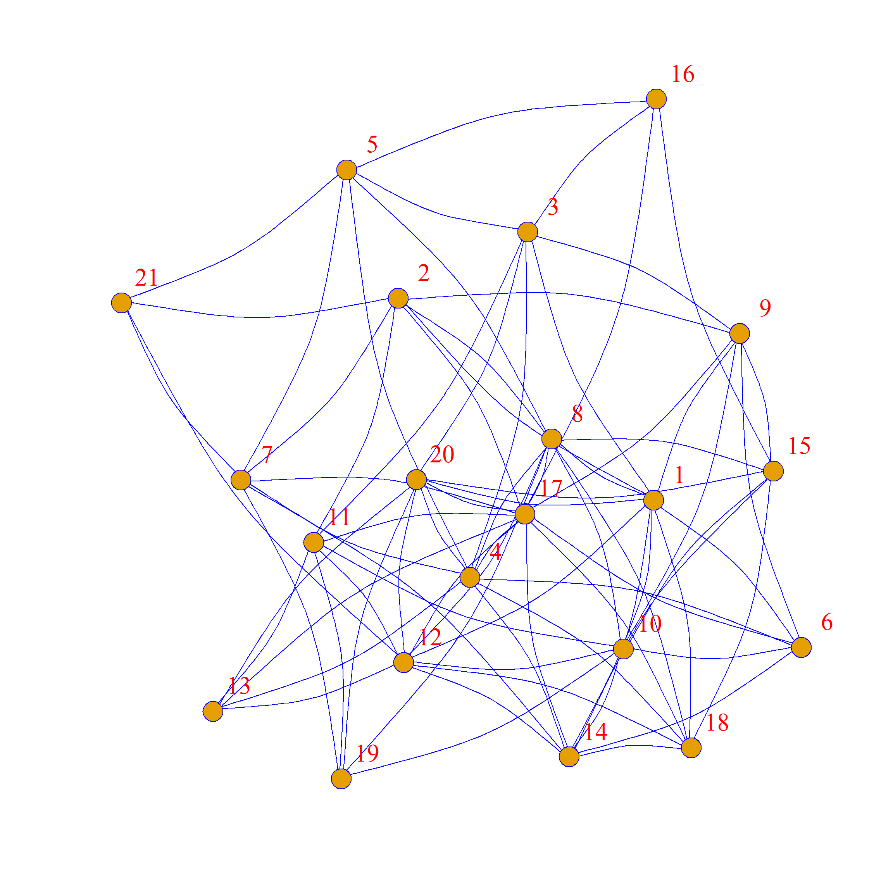
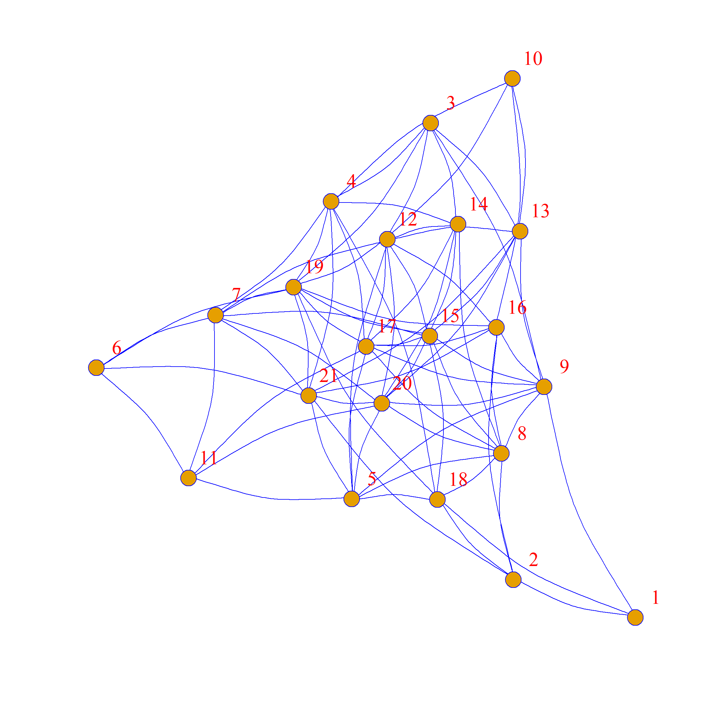
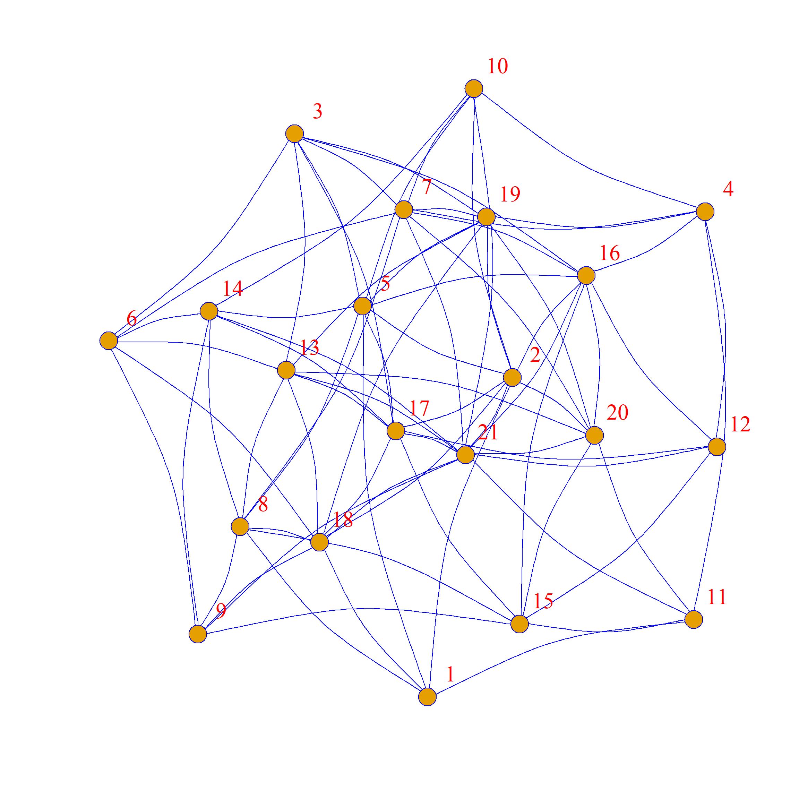
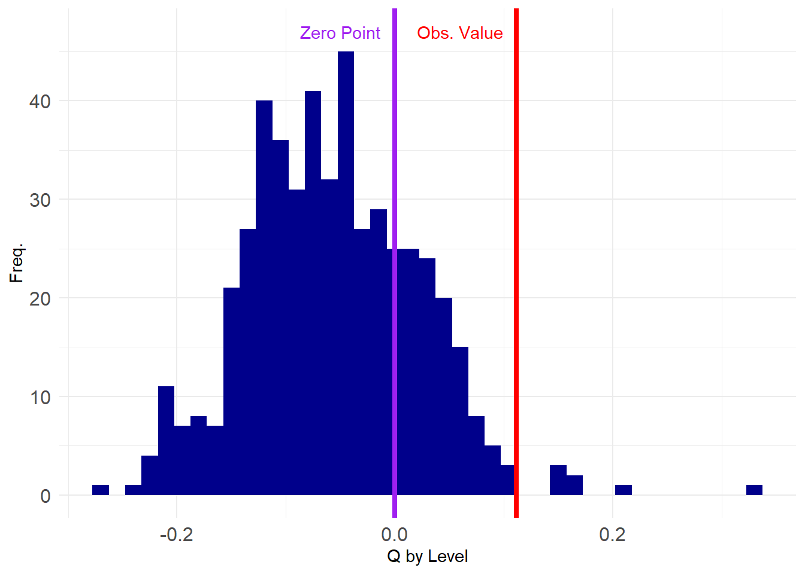
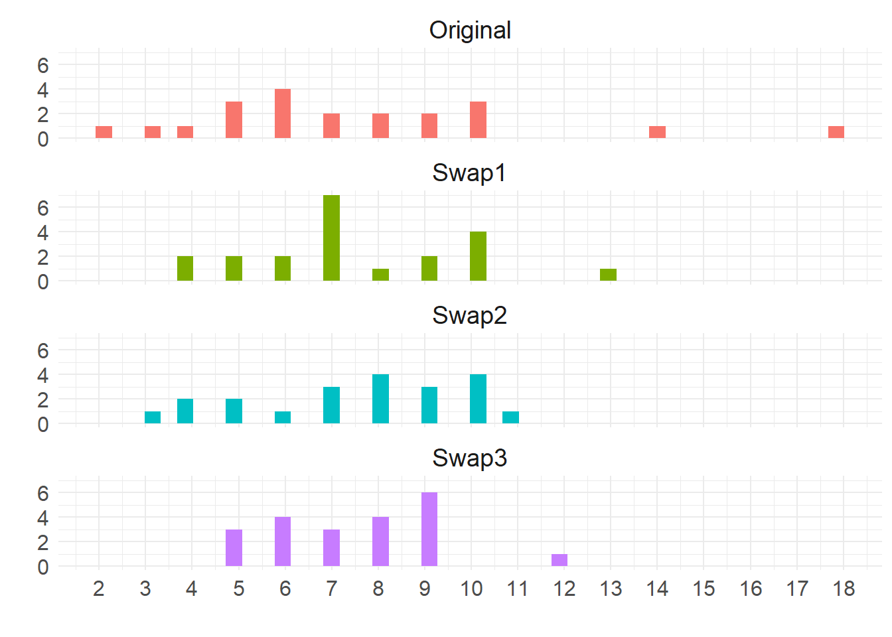
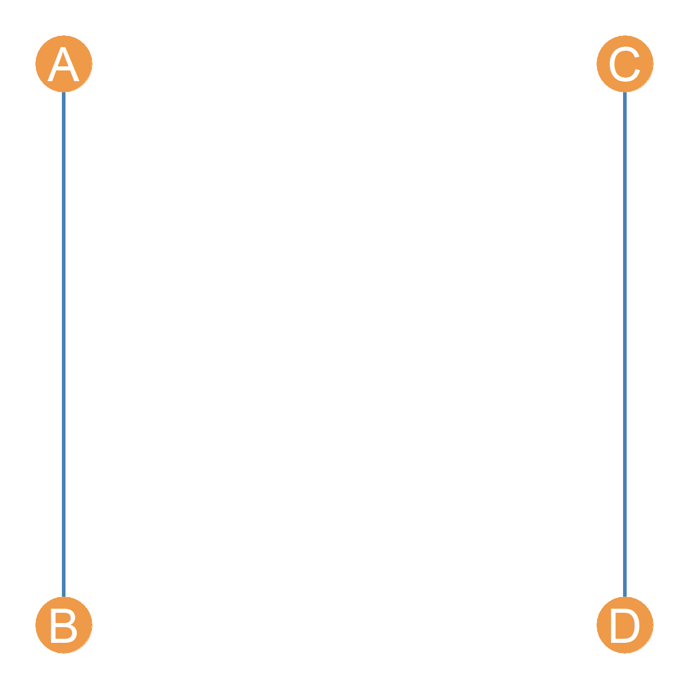
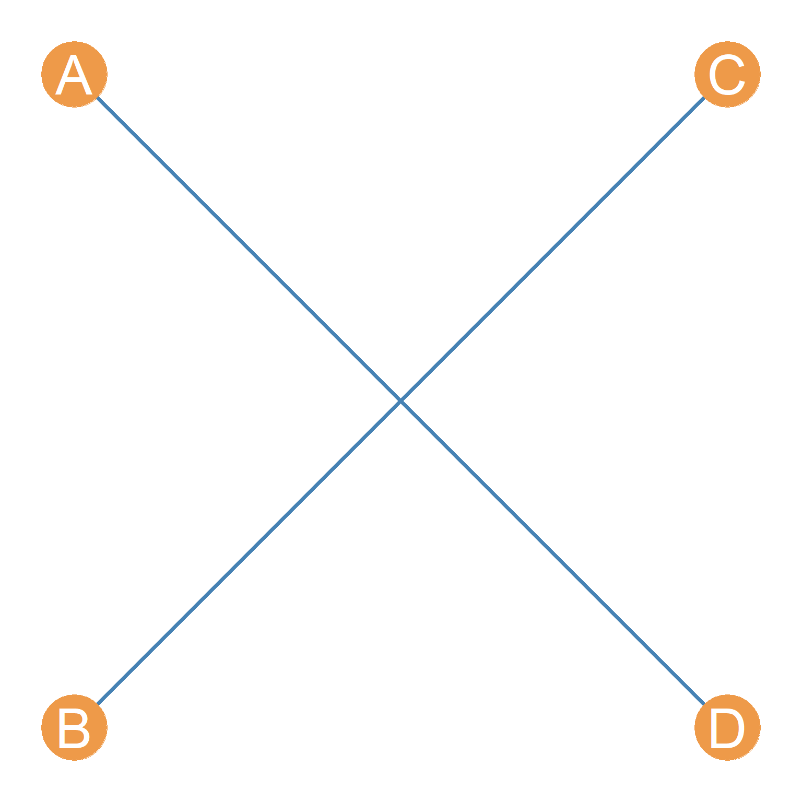
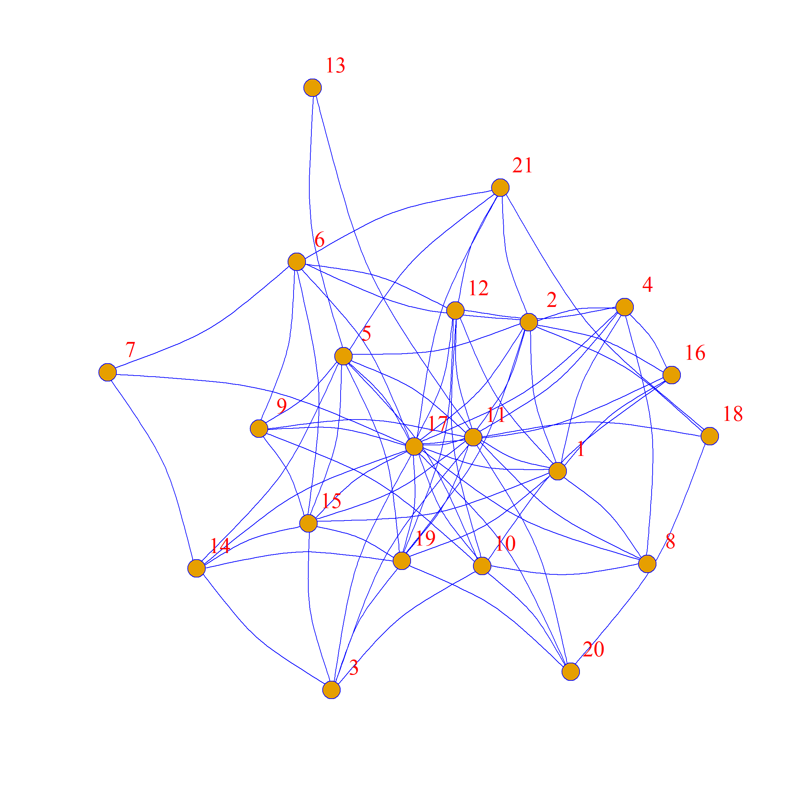
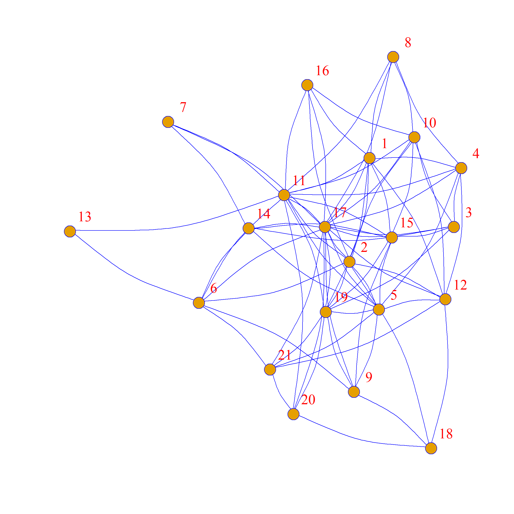
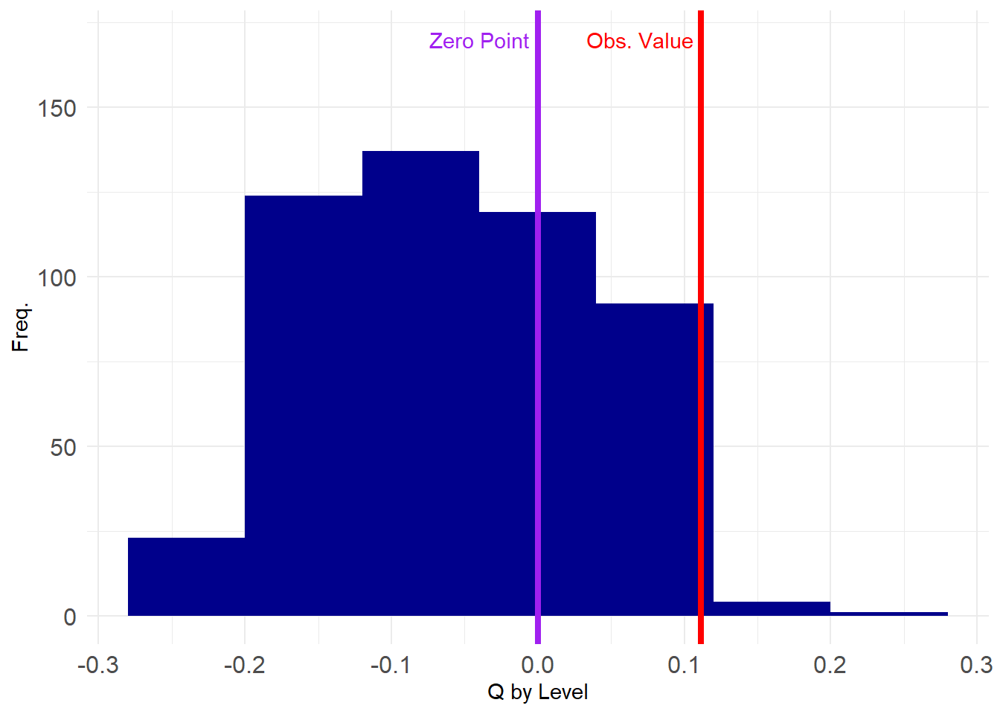

Graph Ensembles in Networks
So far we have treated the observed ties in a given network as given, along with any metrics computed from those ties (e.g., attribute correlations, centralities, etc.). The idea of uncertainty around an estimate, foundational to traditional statistics, has so far not been applicable.
Another approach, and one that brings in concerns about inference, statistical significance, and so forth, is to think of the observed network data as a realization of some underlying random or probabilistic process.
1 Random Networks
There are many ways to go about this, but in the following handouts we will cover two important ones. First we can treat the whole network as a realization of some random process. That leads to models of random networks and graph ensembles (Orsini et al. 2015). This approach is useful for testing single hypotheses against a plausible null (e.g., are the levels of homophily that I am observing in this network more or less than we would expect by chance?). A variation of this strategy uses permutations to do a version of multiple regression in network data (Krackhardt 1988).
Second, there are models that treat each link in the network as a realization of some random process (Pattison and Robins 2002). Because a network is just a set of links, these models are also treating the network as random, but allow us to test more fine-grained multivariate hypotheses by conditioning on multiple characteristics of the ties and the nodes that are involved in each link at the same time. A popular, and extremely flexible approach to this type of multivariate statistical analysis of networks is the family of exponential random graph models usually abbreviated as ERGMs and pronounced “ergums.”
In this handout we will discuss the group of strategies focused on randomizing networks via edge swapping. This other handout covers network regression methods via permutation.
2 Graph Ensembles
A graph ensemble is just a set of graphs that share some graph level property, like the ones we studied in the very first handout. For instance, they might have the same number of nodes, or the same number of edges, or both, but are different in terms of which particular nodes connect to which.
Note that if an ensemble of graphs has the same number of nodes and edges, they will also be identical with regard to any property that is a function of these two things, like the density.
Usually, what we would want is a graph ensemble that matches the properties that we observe in a graph that corresponds to the network of interest. The idea is to create an ensemble of graphs that are similar to our original data. We can then use the ensemble to test whether some quantity we observe in our data is larger or smaller than we would expect by chance. Here “chance” is simply the probability of observing that value in the ensemble of graphs we created, “net” of the property we are holding constant in the ensemble.
As Orsini et al. (2015) note, a simple way to create an ensemble is just by using an edge swapping algorithm on the original graph. Each edge swapping algorithm works by preserving some property of the original graph across each realization, so that all the graphs in the ensemble share that property, while everything else is scrambled.
3 The Erdos-Renyi Model
In the simplest case, we create an ensemble that preserves the number of nodes and edges of the original graph (and everything that is a function of these, like density and average degree) and randomizes everything else in the ensemble relative to the observed graph.
Let’s see how this would work. First we load up a network, in this case Krackardt’s high tech managers data:
This is the undirected version of the friendship nominations network. Let’s review some graph properties:
[1] 21[1] 79[1] 0.3761905[1] 7.52381We can see that we have \(|V| = 21\), \(|E|=79\), \(d=0.38\), and \(\bar{k}=7.5\).
A rewiring of this graph, which preserves these statistics, goes like this: Pick a random edge, detach it from the vertices that are incident to it, and attach it to a new pair of vertices that are currently disconnected (to avoid multiples), making sure they are distinct vertices (to avoid loops). Do that for some proportion of the edges in the graph.
The result is a new “rewired” graph, that still has the same number of nodes and edges as the original (hence same density and average degree), but with whatever original tie-formation tendencies in the original graph scrambled up.
In igraph we can use the rewire function, along with the each_edge rewiring algorithm to accomplish this.
Let’s say we wanted to rewire up to 50% of the edges of the original network. We would then type:
Which creates a new graph called g.swap1 with 50% of the edges scrambled (note that we set the seed if we want to get the same graph every time we run it).
As we can see, the new graph preserves the density and average degree of the original:
[1] 21[1] 79[1] 0.3761905[1] 7.52381And here’s a side-by-side comparison:


Note that while we preferred some structural features of the original network, the swapped graph has a very different structure!
Here are two other graphs that also have the same average degree and density as the original but with 100% of the edges rewired:


One of the reasons why these graphs looks so different from the original is that while these graphs all have the same average degree, the specific degrees of each node are not preserved. This is clear if you compare node 13 in the original graph (which is poorly-connected, with only two friends) to node 13 in the graph to the right of the original, where they now have many (random) friends.
Note that other non-local graph properties (which don’t depend directly on the number of nodes and edges) are also not preserved. For instance, the graph diameter is different across swaps:
[1] 1.569161[1] 1.560091[1] 1.609977[1] 1.573696We will learn how to create graph ensembles that preserve specific node degrees in a bit. But first, let’s see what we can do with graph ensembles.
4 Null Hypothesis Testing in Networks
Remember that one thing we wanted to do is null hypothesis testing; that is, we want to see if something computed in the original graph is more or less than we would expect by chance, given a suitable “null model”, which in our case is a network where the density—and thus expected degree—is preserved but people connect at random (sometimes called an Erdos-Renyi model).
So let’s compute something:
This is Newman’s assortativity coefficient (a.k.a., the modularity), which we covered here, for the nominal category of “Level” telling us that ties are more likely to form between managers of the same level in the company. Is this a “statistically significant” level of assortativity?
Well compared to what? Compared to what we observe in an ensemble of graphs with the same number of nodes, edges, and density!
How do we do that comparison?
First, let’s create an ensemble of 1000 edge-swapped graphs, putting them all into a list object called G. To do that, we use the R function replicate which simulates a loop applying a function a specified number of times, in this case it will be our trusty rewire function with the graph g as input.
We can now compute our assortativity coefficient in each one of them using sapply:
Code
[1] -0.08 -0.02 -0.07 -0.08 -0.14 -0.11 0.01 0.04 -0.05 0.33 -0.09 0.00
[13] -0.07 0.11 -0.04 0.16 -0.14 0.04 -0.10 -0.04 0.03 -0.13 -0.01 -0.04
[25] -0.20 0.00 -0.10 0.00 0.03 -0.03 -0.05 -0.01 -0.11 -0.02 0.02 -0.06
[37] -0.15 -0.07 -0.21 -0.15 -0.08 -0.21 -0.18 -0.04 -0.02 -0.17 -0.19 -0.06
[49] 0.04 -0.12 -0.11 -0.02 -0.05 -0.15 -0.01 -0.04 -0.11 0.03 0.04 0.09
[61] -0.10 -0.10 -0.10 0.09 -0.09 0.01 -0.12 0.04 -0.13 -0.05 -0.04 -0.08
[73] -0.07 -0.21 -0.09 -0.13 0.08 -0.10 -0.07 -0.02 -0.22 -0.08 -0.06 -0.13
[85] -0.12 -0.10 -0.12 0.03 -0.12 -0.13 -0.10 -0.11 -0.05 -0.07 -0.04 -0.16
[97] -0.07 -0.04 0.04 -0.04Note that the modularity is actually negative in most of these graphs, suggesting that when people form ties at random they are unlikely to magically end up being assortative by level.
So let’s see how our observed value stacks up in the grand scheme:
Code
library(ggplot2)
p <- ggplot(data = data.frame(round(assort, 2)), aes(x = assort))
p <- p + geom_histogram(binwidth = 0.015, stat = "bin", fill = "darkblue")
p <- p + geom_vline(
xintercept = assortativity(g, V(g)$level),
color = "red", linetype = 1, linewidth = 1.5
)
p <- p + geom_vline(
xintercept = 0, linetype = 1,
color = "purple", linewidth = 1.5
)
p <- p + theme_minimal() + labs(x = "Q by Level", y = "Freq.")
p <- p + theme(axis.text = element_text(size = 12))
p <- p + annotate("text", x = -0.05, y = 47, label = "Zero Point", color = "purple")
p <- p + annotate("text", x = 0.06, y = 47, label = "Obs. Value", color = "red")
p
So we can see that only a few of the networks in the ensemble have \(Q\) values higher than the observed one, indicating that what we observed is unlikely to have occurred by chance.
How unlikely? We can just compute the value that corresponds to the 99th percentile of the assortativity distribution from the ensemble and then see if what observe is above that value (corresponding to \(p < 0.01\)).
99%
0.1533994 99%
FALSE We find that our observed value of assortativity by dept is not significant at this level, as the corresponding value in the ensemble distribution is higher than what we observe.
Of course we can also try a less stringent standard for statistical significance, like \(p < 0.05\):
95%
0.0665133 95%
TRUE Which, in this case, is “statistically significant”! This is because the observed value is larger than the corresponding value at the 95th percentile slot of the graph ensemble distribution.
If we wanted to find the actual “p-value” corresponding to our observed value, we would just type the following, which uses the native R function ecdf:
Which yields \(p = 0.014\) for our observed value of assortativity by department, which is good enough to get published.
Note, however, that this is a one-tailed test of significance (Borgatti et al. 2024, 285), this is fine since we usually expect the modularity to be positive which implies a directional hypothesis.
If we wanted a more stringent two-tailed we would need to create a vector with the absolute value of the modularity and use that to construct our test:
Which would fail the statistical significance test by the usual standards (\(p = 0.27\)).
5 Preserving Degrees
Recall that our swapping function above preserves the expected (average) degree but not the degree of any particular node. This means that the neither the degree sequence nor the degree distribution of the original network is preserved.
This is clear in the following plots:
Code
library(dplyr)
library(tidyr)
deg.dat <- data.frame(Original = degree(g), Swap1 = degree(g.swap1), Swap2 = degree(g.swap2), Swap3 = degree(g.swap3)) %>%
pivot_longer(1:4, names_to = "graph") %>%
mutate(v = sort(rep(1:vcount(g), 4)))
p <- ggplot(data = deg.dat, aes(x = value, group = graph, fill = graph))
p <- p + geom_histogram(binwidth = 0.35)
p <- p + facet_wrap(~graph, nrow = 4)
p <- p + theme_minimal()
p <- p + theme(
legend.position = "none",
axis.text = element_text(size = 12),
strip.text = element_text(size = 14),
axis.title = element_text(size = 14)
)
p <- p + scale_x_continuous(breaks = c(1:18))
p <- p + labs(x = "", y = "")
p
The top shows the original degree distribution, which is different from the ones in the swapped graphs. In fact, it is clear that the swapped degree distribution get rid of extreme high degree nodes and pull everyone to the middle (Erdos-Renyi graphs degrees tend toward a Poisson distribution).
So it could be that the plain average degree (Erdos-Renyi) preserving model is too simplistic to use as a plausible null model. A better model is one that would preserve the degrees of each node in the ensemble but make every connection otherwise random.
In igraph there is a trusty function called keeping_degseq—which is used alongside the more general function rewire we used earlier—that allows us to scramble the edges in a graph while keeping the degrees of each node the same as the original.


The basic idea is to sample a pair of edges connecting vertices \(a\) and \(b\) and \(c\) and \(d\) respectively, delete them, and create two new edges (if they don’t currently exist) between vertices \(a\) and \(c\) and between \(b\) and \(d\), repeating this process niter number of times. A toy example of the degree-preserving swap is shown in ap. This approach randomizes connections but keeps the number of edges incident to each node the same (Maslov and Sneppen 2002).
Let’s see how it works:
[1] 9 10 6 7 10 7 3 5 6 8 14 8 2 6 9 5 18 4 10 5 6 [1] 9 10 6 7 10 7 3 5 6 8 14 8 2 6 9 5 18 4 10 5 6We can see that the edge-swapping algorithm creates a new graph with exactly the same degree sequence as the original.
Here they are side-by-side:


As we can see, the network structure is definitely different between these two graphs, but each node has the same levels of connectivity in each.
So now we can use our more stringent null model to test our previous hypothesis: Is the observed level of assortativity by level more than we would observe in the same network where everyone keeps their degree centrality but everything is random?
Let’s find out.
First, let’s wrap the degree-preserving swap into a function:
Then let’s create our graph ensemble using 500 graphs:
And see where our observed value falls in the distribution:
Code
assort <- sapply(G2, assortativity, values = V(g)$level)
library(ggplot2)
p <- ggplot(data = data.frame(round(assort, 2)), aes(x = assort))
p <- p + geom_histogram(binwidth = 0.08, stat = "bin", fill = "darkblue")
p <- p + geom_vline(
xintercept = assortativity(g, V(g)$level),
color = "red", linetype = 1, linewidth = 1.5
)
p <- p + geom_vline(
xintercept = 0, linetype = 1,
color = "purple", linewidth = 1.5
)
p <- p + theme_minimal() + labs(x = "Q by Level", y = "Freq.")
p <- p + theme(axis.text = element_text(size = 12))
p <- p + annotate("text", x = -0.04, y = 170, label = "Zero Point", color = "purple")
p <- p + annotate("text", x = 0.07, y = 170, label = "Obs. Value", color = "red")
p
Note that the values are much more constrained this time around, falling within specific ranges. We can test our hypothesis the same way as before:
95%
0.1116466 95%
FALSE Which tells us that after account for node degree differences, the observed value we observed is still significantly larger than we would have observed by chance using conventional cutoffs.
Indeed, the p-value of the estimate is:
Which is pretty good. Maybe our paper will be published!
But oh no, some reviewer who doesn’t know what they are talking about asked for a two-tailed test:
It’s a rejection after all :(